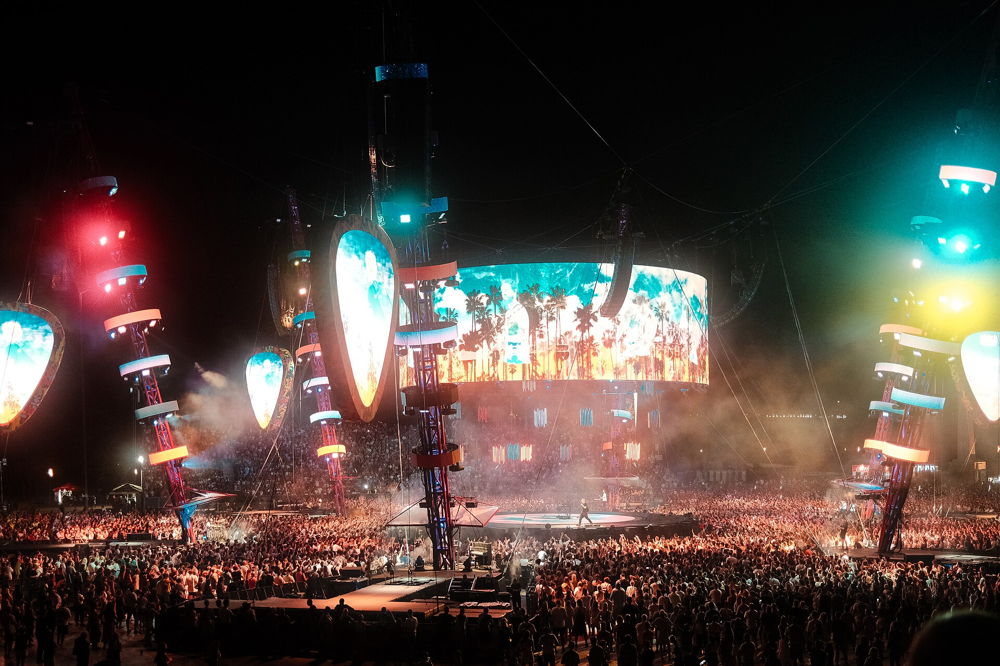
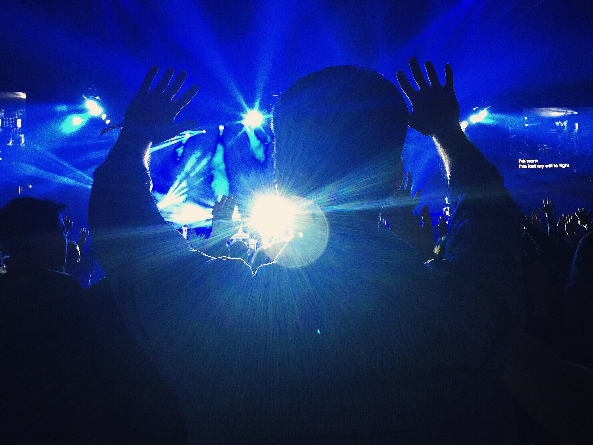
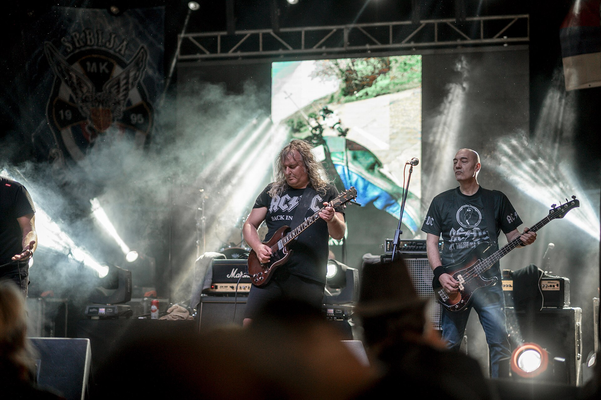
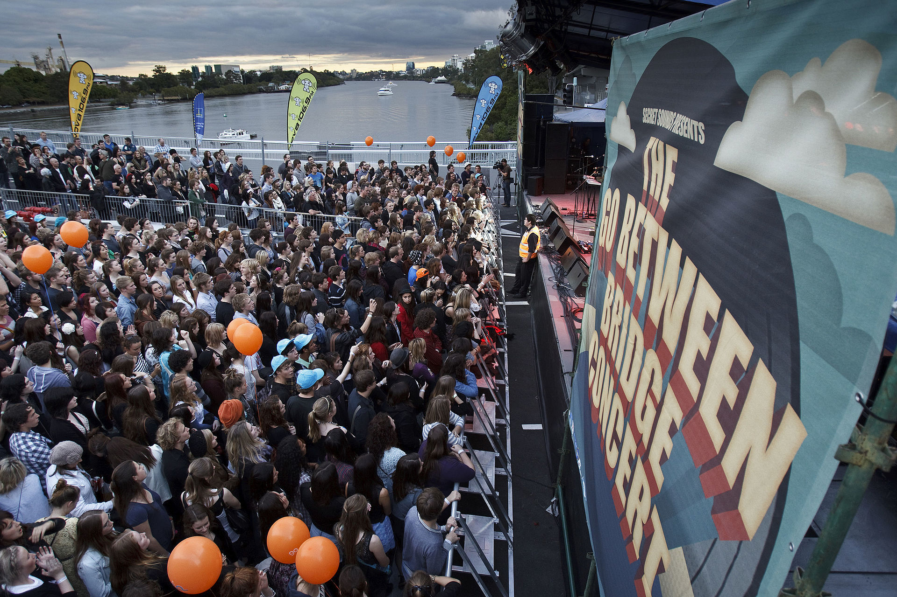
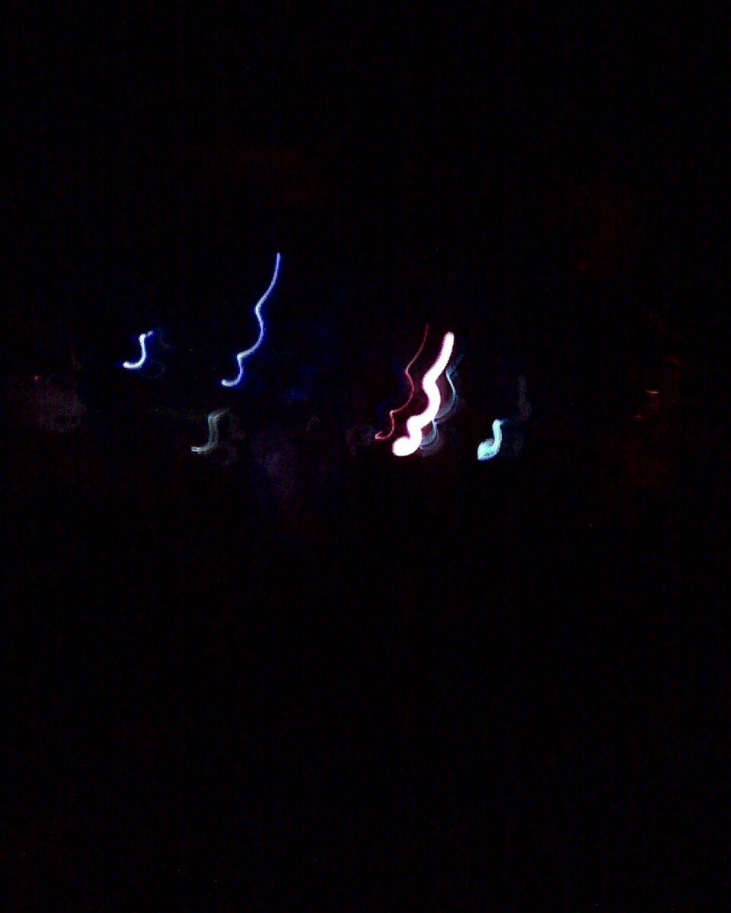

Independent sound / visual culture
Feel
the
Noise
A digital space for people who believe music is more than sound. It is atmosphere, identity and memory.
Discover the story →
Visual Archive / 01
SOUND — CULTURE — ENERGY — MOTION — SOUND — CULTURE —
02
About the project

Music
is
visual.
NOIR is an experimental digital space built around the culture surrounding music. No unnecessary players. No endless lists. No distractions. Just atmosphere, photography, typography and a place to explore the idea behind the sound.
03
Visual archive

Energy / 001
Crowd / 002
Motion / 003